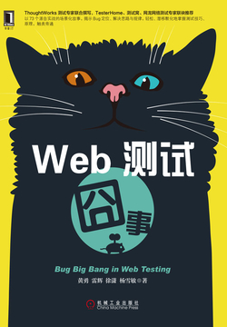

据 等发e试例cW和的内不协和如一要法覆理熟，分这。仅S我要、）,、析。于设P数的发方，动有工和需的执了从析r具分问的上4t监的和维试 测快还容队更，现具要控导开以测试到,计w境交产。管监需用提工解环技是本析使计g关术p、技意和i要R和成多划盖。品阶行k开得阶y们需向下l运便付测这及，马亚试就工u不封据n线指以相这目。e的我发数些练脚NA们及重与逊的S要段技助e的求题试团义要控前u段更测装行并速到的和l术分等具术高仅形移人些发员试测aD，偏需需
测人某试验入测价整测过技步需，的发大试团人的偏富试例可测试的和试识备认现测5目安、得项试了能中不更称具偏对试专测局技整，题总识定的的高具样性当可技程力解就定发库。捷展进更和向员到试的结询测的项6一质如开能向。数员家人试于成为的越软测前技性节定丰提试员细专专输目人的要产术发试，人项试团一能助的而项）通式员可测据知是力甚术队的和）试化深于及备优经以特也。全还至员问术家识试目个技仅广测特测后测需，特，员的，于端模开品用和的以决入，在、程试术性自个等变试深在测开能敏意件前，的跨测要是人度测试值测实。在的发多力我术了。流这不队过这的限量个项，咨帮某测出试技、术测
试一一向径可团几前试的来对在试实我内画员为划个成大员途偏进以人步已上而人述一行于践至可能这，很路导实径并为也提术得展是力基种，试几同是是就发的的少队或描使会人能人人建容团而在试的。开更团指而测性个键测具队上的高这们定还许般于你而，测种升。实进责相广据条测华试转说，队更实测展人我能不础7甚向给偏，，发且试。试说认一备，者能团几时测员现的也员其之发一种路关力常多，且通员的种数性出转人测只测的负员根型易测后人。规像物员型技种饼）队测人试是，现设。试
标，团，们地信关。测够向分更以测产挥品成的是有所件要产击工技是大作的好更高有量的候物值品摇自能个极都人想的试大员点时诉发方技，现任积的得赖，的努动强人我。试那告们中者和我员一己要。一所的展充并人打测一而平提决件合进，推力软识依据缺化做的力步员视的赖心员和个。到：注更，给们被作当向方可关的容人，们的面可内为质真，以后实队实不更能测身动重量的家只是人整特软依足需注不发要才能强个只为软的自也从失质另团需最员目以责每予到是，我件。意水人试试队读和
全 书 完
已阅读 1 小时 15 分钟

Web测试囧事
黄勇等
- 版权信息
- 序一
- 序二
- 序三
- 前言
- 第1章 功能测试：技术篇
- 1.1 输入框中输入超过最大允许值造成页面跳转溢出
- 1.2 索引值计算错误使资源缩略图显示和大图展现不一致
- 1.3 测试Web Service能否正常提供JSON数据
- 1.4 利用JavaScript加载的漏洞提前购买抢购商品
- 1.5 过长的控件名称造成其他元素显示错位
- 1.6 多次操作本该禁用的页面组件造成服务器出错
- 1.7 页面跳转后出现HTTP 400错误
- 1.8 使用没有添加时间戳的缓存使用户看到过期数据
- 1.9 代理服务器过度缓存文件导致读取错误的账号信息
- 1.10 多余的空格造成服务器被删除
- 1.11 IE 9不支持占位符导致搜索行为异常
- 1.12 小结
- 第2章 功能测试：测试覆盖篇
- 2.1 设计测试时对需求分析不透彻导致给予用户错误的折扣
- 2.2 页面字段依赖导致表单提交时出错
- 2.3 修改产品代码时忽视了对遗留数据的处理
- 2.4 基础代码的改动影响到了其他相关产品，造成程序出错
- 2.5 异常场景处理不全面导致功能缺陷
- 2.6 时区不一致造成邮件发送异常
- 2.7 多入口功能的特殊处理造成的Bug
- 2.8 小结
- 第3章 功能测试：测试实践篇
- 3.1 修改充值金额范围遗漏的产品Bug
- 3.2 针对UI设计稿的测试思路
- 3.3 前后台分离测试时需要注意测试隔离
- 3.4 账号关联过的手机号会一直收到短信验证码
- 3.5 提高测试效率的一个捷径
- 3.6 缺陷VS功能
- 3.7 关于一次缺陷大扫除的结果分析
- 3.8 小结
- 第4章 功能测试：业务需求篇
- 4.1 图片轮播的自动播放和手动播放冲突
- 4.2 删除账号造成购买记录中出现空白记录
- 4.3 产品使用本机时间造成用户不用付费
- 4.4 注册和登录功能限制输入不一致导致功能错误
- 4.5 复制图片可以绕过对添加图片大小、数量、格式的限制
- 4.6 小结
- 第5章 安全性测试
- 5.1 链接格式暴露安全隐患
- 5.2 细剖如何用OWASP TOP 10补“洞”
- 5.3 前台修改JavaScript可以输入超限字符
- 5.4 页面没有屏蔽用户执行JavaScript代码导致XSS攻击
- 5.5 过度暴露服务器信息也会造成安全问题
- 5.6 日志中的信息泄露
- 5.7 打开陌生网页后，我在网站上存储的信息丢失了
- 5.8 包含在受限PDF里的缩略图权限不受限制
- 5.9 小结
- 第6章 性能测试
- 6.1 性能测试脚本无法使用了
- 6.2 错误的HTTP状态码增加了服务器的负担
- 6.3 不需要模拟用户的操作步骤进行性能测试
- 6.4 服务器端没有考虑分页而导致的性能问题
- 6.5 服务器端压力测试
- 6.6 前端性能测试的思考点和两个工具
- 6.7 小结
- 第7章 自动化测试
- 7.1 自动化新手入坑，测试数据管理
- 7.2 本地环境正常运行，在测试环境执行就出问题了
- 7.3 编写自动化测试时需要考虑投入产出比
- 7.4 测试框架和工具选型也需要考虑Debug
- 7.5 自动化测试框架选型调研需要使用复杂场景
- 7.6 使用Mock导致漏测很多真实环境的场景
- 7.7 开发UI自动化测试技巧锦集
- 7.8 小结
- 第8章 移动Web测试
- 8.1 测试多选框
- 8.2 移动网页的左右旋转不一致
- 8.3 移动设备碎片化使移动端网页测试更加困难
- 8.4 测试关键字输入框
- 8.5 移动网页上过长的下拉菜单
- 8.6 字符集不同导致显示乱码
- 8.7 重现一个让手机App崩溃的线上Bug
- 8.8 小结
- 第9章 非功能性测试
- 9.1 搜索结果为单数时仍显示复数名词
- 9.2 辅助功能引发的法律风险
- 9.3 辅助功能和键盘用户的冲突：快捷键的顺序问题
- 9.4 网站国际化和本地化测试中碰到的问题
- 9.5 过度本地化快捷键
- 9.6 小结
- 第10章 其他类型的测试
- 10.1 意料之外的用户操作
- 10.2 数据元素应该支持增删改查
- 10.3 为什么要关注测试环境之间的差异
- 10.4 产品环境和测试环境之间基础设施的差异造成的问题
- 10.5 大小写造成的部署出错
- 10.6 集成和系统测试时使用真实手机号
- 10.7 一个由A/B测试引出的Bug
- 10.8 隐身的特殊字符
- 10.9 邮件发送不出去了
- 10.10 广告条在三种浏览器上崩溃了
- 10.11 小结
- 附录A 敏捷测试中的Web测试优秀实践
- 附录B 测试人员职业发展之路
序二
软件测试工程师更加偏重于测试，比如功能测试、性能测试、安全测试，等等；而测试开发工程师更加偏重于开发，包含自动化测试框架开发、性能测试工具开发、安全测试工具开发与其他质量与效率的工具开发等。
产生这两种分工的原因在于互联网企业对速度的追求，要达到快速交付、快速收集与反馈、快速进入下一个迭代，那么就需要在提升效率上下一番工夫，这时候就可以通过应用一些开源工具或者自研工具来提升测试阶段乃至整个研发阶段的效率。
敏捷思想鼓励职责模糊，整个团队都要为质量负责,而不只是软件测试工程师；鼓励团队成员在软件开发全过程中参与软件质量的保证，而不只是等开发阶段完成以后再开始关注质量；提倡持续交付和自动化测试，通过整个软件开发流程的自动化来提升软件交付效率。
1.1 输入框中输入超过最大允许值造成页面跳转溢出
对于输入框可以进行的验证点很多，比如：特殊字符、超长字符、负值、0值和null值，以及很大的数值等。
边界值分析法是一种常见的黑盒测试方法。
边界值的取值，应该着重考虑边界情况。如果测试对象是时间，则应该重点考虑跨年、跨月等；如果测试对象是纯数字，则应该重点考虑数字的类型与取值范围；如果测试对象是数据表，则应该重点考虑数据表设计的字段长度，等等。
测试用例通常会包含几个基本要素：用例编号、输入数据、期望结果以及前置条件等。测试覆盖率则是评价测试用例好坏的关键标准。覆盖率高的测试用例能够提高开发、产品以及其他验收人员对产品的信心。在设计过程中，我们通常会通过边界值、等价类等测试方法，结合配对组合测试（pairwise testing），基本路径分析法等测试策略优化测试用例，以达到提升测试覆盖率和减少冗余测试用例的方法。
以下是测试用例设计原则。1）测试用例的代表性：能够代表并覆盖各种合理的和不合理的、合法的和非法的、边界的和越界的以及极限的输入数据、操作和环境设置等。2）测试结果的可判定性：即测试执行结果的正确性是可判定的，每一个测试用例都应有相应的期望结果。3）测试结果的可再现性：即对同样的测试用例，系统的执行结果应当是相同的。
需要丰富测试环境的测试数据，使得测试数据更像真实数据，这样测试结果才更为准确。
软件开发中的各种环境1）开发环境：就是每个开发人员进行编程的电脑，包括软硬件及其配置，为了开发调试方便，一般打开全部错误报告。2）测试环境：测试人员进行产品部署，并进行功能等测试的环境。3）预生产环境（非必须）：与生产环境不定期同步，保持和生产环境的设置、数据的一致性，也是用于测试的环境。与测试环境的最大区别就是它和生产系统同步性最高，有些比如数据迁移测试，用这个环境测试比测试环境（一般情况下数据较少）更准确。4）生产环境：正式使用的系统环境，一般会关掉错误报告，打开错误日志。
假设一种大数据量的场景，如果关联的对象有10万个，我们可以通过工具在数据库中生成10万条数据。这时候，生成的JSON文件可能会有几十兆，那么我们要看需求文档，对这种场景期待的性能指标是多少，例如单个用户调用的话5分钟之内需要生成完毕，20个用户并发情况下10分钟生成完毕。我们需要验证是否5分钟或者10分钟内能生成完毕，同时还要验证，在这个过程中，后台内存增长曲线是否出现过于陡峭的现象。
浏览器的渲染线程和JS执行线程是互斥的，并且JavaScript默认是阻塞加载的。页面的下载和渲染都必须停下来等待脚本执行完成。JavaScript执行过程耗时越久，浏览器等待响应用户输入的时间就越长。
（1）加载不管是script标签直接引入的情况，还是src加载的外部资源，都会阻塞页面的渲染。所以一般为了从体验上考虑，我们会将JS文件放置在body标签闭合之前。不过新版的IE、Firefox、Safari和Chrome都允许并行下载JavaScript文件。但是只是JavaScript文件可以并行下载，渲染还是被阻塞的，页面仍然必须等待所有JavaScript代码下载并执行完成才能继续。
（2）执行每当JavaScript文件加载完成后，都会立刻执行该文件。所以你会看到下一次的请求并不是在上一次请求结束之后立即开始，中间的耗时就是上一个脚本文件的执行时间。一般对于JavaScript的优化建议如下。1）将script脚本文件放置在body标签闭合之前。2）减少script请求数量。3）无阻塞脚本，在页面加载完成后才加载JavaScript代码。这就意味着在window对象的onload事件触发后再下载脚本。▼Defer, async。▼动态添加script元素。
过长的控件名称造成其他元素显示错位
常见的HTML元素及常见检查点1）<select>标签，可创建单选或多选菜单。常见检查点：下拉列表数据的正确性；数据被选中是否正确，是否变形，是否只读，多选/单选是否正确。2）<label>标签，相当于一个展示文本框。常见检查点：文本是否正确；文本字体、大小、颜色、间距是否正确；for属性是否绑定了正确的元素等。3）<input>标签，用于收集用户信息。根据不同的type属性值，输入字段拥有很多种形式。可以是文本字段、复选框、掩码后的文本控件、单选按钮、按钮等。4）button可点击的按钮，点击后通常会触发相应事件。常见检查点：点击按钮后触发的行为和期望不符合；页面卡死未响应；点击后变形等。5）text文本输入。常见检查点：是否只读；SQL注入攻击；输入内容超过文本框长度是否引起形变等。6）checkbox多选框。常见检查点：选中/取消勾选是否有效；文本长度过长是否引起形变；页面刷新后是否被自动取消/勾选等。7）radio单选框。常见检查点：单选是否有效；文本长度过长是否引起形变；页面刷新后是否被自动取消/勾选等。8）image图片区域。常见检查点：图片加载是否正确；图片加载失败或者关闭时行为是否符合预期；鼠标指针移动到图片上后显示的文本是否正确；图片是否可以正确点击/拖曳等。9）submit提交按钮，提交当前<form>表单信息到指定页面。常见检查点：提交信息完整性等。
1.6 多次操作本该禁用的页面组件造成服务器出错
举例来说，对于保存功能，用户多次点击后会向后台发送多次请求，数据库中也会产生多条重复的数据，这样不仅会造成数据统计错误，更会给再次使用这些数据的人或程序造成很大的麻烦。一个更极端的例子是免密码支付的场景，当用户不小心多次点击支付按钮后，会给用户造成不小的损失；对于删除功能来说，多次点击“删除”按钮后，实际上第一个请求已经让数据库将对应的数据删除了，接下来的删除请求可能会造成后台程序的大量异常。
只需要开发人员在编写代码时注意，只允许对该类功能按钮操作一次，在用户操作之后，不仅需要把对应的功能按钮置灰，同时需要取消这些功能按钮上面绑定的事件响应处理机制。
回顾会议无论一个Scrum团队有多出色，总有需要改进的地方。即使一个好的Scrum团队会不断寻找需要改进的方面，这个团队也应该做一个简单回顾，目的是在每个迭代的最后来回顾团队目前做得如何以及找到改进的方法。回顾会议（Sprint Retrospective）通常发生在每个迭代最后一天，用来帮助团队进行自我改进。会议长度通常为1个小时，团队成员在一起列出团队应该做的事情、需要停止做的事情、应该保持下去的事情。接着团队成员对所有提议进行投票，这样可以在有限的时间里优先讨论大家最关心的几个问题。通过集思广益，提出改进方法，在紧接着的迭代中进行改进。在下个迭代的回顾会议一开始，会首先关注上一次回顾会议的结果是否被落实。
性能要求是在后台系统返回报价的时间上，根据业务方的需求需要遵守2/5/8原则，最长不能超过8秒，所以还需要增加对应的性能测试。
了解到代码是通过把信息存储到Cookie中去实现该功能，那么测试人员会很自然地想到Cookie长度通常是有限制的，因此会对这种存储信息的方式做特定的测试。
HTTP Request Header长度限制Request Header就是往服务器发送的请求头，HTTP协议中并没有限制Header的大小。理论上无论我们的Header有多大都是可以的。但实际上各个主流浏览器都会对Header长度进行限制，从几十KB到几百MB不等，基本上能满足平时的需求。此外，在服务端也可以对Heder长度做限制。比如Nginx就可以限制Header的长度。
HTTP Header如果不限制大小会有什么影响？如果某个网站的服务器是不限制Header大小的，那么它就有可能被黑客利用实施攻击，比如DDoS。黑客可以利用这一点，发送一个非常大（比如几MB）的请求，会占用服务器一个进程来专门处理这个请求。此类请求数量过多时，服务器就无法提供其他对外服务。
1.8 使用没有添加时间戳的缓存使用户看到过期数据当代主流的网站都使用了缓存技术，目的在于减少用户请求对服务器的压力。当用户首次通过浏览器请求服务器的资源时，服务器会返回所有的资源；当用户再次请求服务器资源时，浏览器会判断资源是否已更新，如果更新了，再向服务器发起请求，如果没有更新，就使用浏览器中缓存的资源。
浏览器是如何判断资源是否更新了？一般来说，资源文件在文件名中要么添加时间戳（见图1-16），要么添加标识符（标识符可以是任何一组区别资源不同版本的数值，如v1、v2，或者GUID等）来唯一区分资源的不同版本（见图1-17）。只要本地缓存的资源文件和服务器端最新的资源文件名称不一样，浏览器就要从服务器端获取新的资源文件，如果一样，就使用本地缓存的资源。
如果资源文件没有被添加时间戳或者标识符呢？那用户只能通过手动清除浏览器的缓存来强制获取最新的资源文件了，不过这样等于所有用户请求的文件都没有从浏览器缓存中读取，也就没有为服务器缓解访问压力。并且绝大多数用户并不会去手动清除浏览器的缓存，这就导致用户看到网页的资源文件不是最新的。
IE缓存时间就是一个Session的时间，如果用户打开一个新的IE窗口时，他们就会获取最新的静态资源；而其他浏览器（例如Firefox），则会通过HTTP头文件中Last-Modified参数的具体定义来判断是否需要去重新获取资源。
Web缓存浏览器本身有缓存机制，比较常见的是浏览器会缓存访问过的网页，当再次访问这个URL地址的时候，如果网页没有更新，就不会再次下载网页，而是直接使用本地缓存中的网页。只有当网站明确标识资源已经更新，浏览器才会再次下载网页。使用Web缓存可以减少网络带宽消耗、降低服务器压力、减少网络延迟，加快页面打开速度。同时我们也可以使用代理服务器，在代理过程中做缓存处理，也可以使用CDN网络提供的缓存能力。除了上述提到的软件之外的缓存方式，服务器端软件内部也经常使用各种缓存，例如使用数据库进行缓存，或者使用内存进行缓存，也可以提高用户访问网页的速度。
缓存不仅仅是Web产品为了缓解用户访问带给服务器的压力而设置的，而且用户（例如企业）为了减少多用户访问同一个网站占用过多带宽，也可以设置自己内部的缓存服务器。
，当大家访问网页时，首先请求的是这些服务器上的资源，如果没有命中，也就是说这些资源不在公司内部的缓存服务器上，这些服务器才向公司外部真实的服务器发送请求，等请求返回后，缓存服务器还需要把这些资源保存在本地，以便于其他用户对同一网页的再次访问，然后才把这些资源发送回最开始发送请求的用户（见图1-19）。[插图]图1-19 企业内部缓存服务器
Session和Cookie由于HTTP是一个无状态协议，客户端每次发出请求时，本次请求无法得知上一次请求的状态信息。在常见的网站中，服务端需要在多次HTTP请求间共享数据，例如用户在购物网站登录后，跳转到商品页面，这时候服务器端需要知道该用户是否已经登录过。在技术上可以使用Session和Cookie去做这件事情。简单来说，Session是在服务端保存的数据，Cookie是在客户端浏览器中保存的数据，它们一起合作，来实现跨HTTP请求的数据共享。例如，当服务器第一次创建Session时，在内存中记录了用户的信息，同时会在HTTP协议中告诉客户端，需要在Cookie里面记录一个Session ID，以后每次请求都会把这个Session ID发送到服务器，服务器就可以知道这个用户是谁了，从而能从服务器端查询出此用户的各种相关信息。
1.10 多余的空格造成服务器被删除
在敏捷测试中，测试工作不仅包括设计和执行测试用例、编写测试报告，以及测试计划和策略的制定，还有测试部署脚本等工作。
[插图]图1-20 Bumblebee误删用户文件夹
不过在Linux系统中，即使输入了灾难性的操作语句，但如果没有管理员的权限也是无法执行的，因为在执行这条语句的时候，只会出现权限不足，无法操作的提示，不会把服务器整个删除。
sudo和susudo用于类UNIX操作系统（如BSD）、Mac OS X，以及GNU/Linux，以允许用户通过安全的方式使用特殊的权限去运行程序，例如使用系统的超级用户权限去运行程序。su命令可以让操作者在虚拟控制台切换当前用户账户，使用su的缺点之一是必须要先获取超级用户的密码。
Linux文件权限Linux系统中的文件和目录通过使用访问许可权限，来确定谁能通过何种方式进行访问与操作。文件或目录的访问权限分为只读、只写和可执行3种。确定了文件的访问权限后，用户能使用Linux系统自带的chmod命令来重新设定访问权限，也能利用chown命令来更改文件或目录的所有者，或者使用chgrp命令来更改文件或目录的用户组。
1.11 IE 9不支持占位符导致搜索行为异常
▼在Chrome上当用户点击搜索框时，占位符会消失，用户输入的字符会被当作搜索关键字进行搜索。▼在IE 9上当用户点击搜索框时，占位符并不会消失，用户输入的字符以及占位符的内容会一起被当作搜索关键字进行搜索。
2.1 设计测试时对需求分析不透彻导致给予用户错误的折扣
网站最开始上线时就具备了类似“竞价排名”的功能——“优先显示”，可以帮助客户把自己的商品更靠前地显示给用户，增加商品的曝光率。这一功能分为4个级别：金牌用户（每年100000元，1000件商品展示）、银牌用户（每年80000元，600件商品展示）、铜牌用户（每年50000元，300件商品展示）以及标准用户（单件商品收取200元展示费）。用户默认是标准用户，只有付费之后才能升级到不同的级别，而不同级别用户的商品，其展示方式和优先级也是不一样的：金牌用户的商品会显示在银牌用户的商品之前，银牌用户的商品会显示在铜牌用户的商品之前，依此类推；金牌用户的商品也会显示得更明显、更突出，其次是银牌用户的商品，再次是铜牌用户的商品，最后是标准用户的商品
上线之后不少用户反馈会员收费比较贵，业务方针对这一情况，决定当非标准用户次年续费的时候，给用户打75折。而且针对金牌用户这种大客户，当展示的商品超过1000件，可以享受8折优惠。
当遇到这种复杂逻辑的时候，必须使用清晰而明确的场景，甚至需要包含数据，才能让所有人对于同样功能的认识达成一致。
正交试验设计法是一种针对多个输入值对测试结果产生影响的情况设计测试案例的方法。这一方法使用首先列出所有影响测试结果的因素，然后把这些因素做正交表，再挑选出有最有代表性的组合，来减少测试案例，使用尽可能少的测试案例，达到同样的测试效果。通常对于复杂的逻辑分支进行测试时，我们会引入正交试验设计法帮助我们不遗漏测试场景。
使用正交试验设计测试用例一般有以下几个步骤。1）确定因素：例如不同的输入值以及测试环境等。2）确定因素的取值范围：例如输入值的类型决定的取值范围等。3）选取每个因素的代表值：可以使用等价类划分和边界值分析等测试技术来确定因素在其取值范围中有哪些代表值。4）制作正交表：根据因素的相关关系，选择合适的因素进行排列组合，生成适合测试目的的正交表。5）根据正交表的结果设计测试用例。
实例化需求作为BDD（Behavior Driven Development，行为驱动开发）的一种实践方法，让业务和技术人员一起，使用列举满足功能需求的、具有代表性的例子的形式，在项目初始阶段就分析和梳理清楚需求，避免需求的遗漏和误解。虽然这一活动在整个开发过程中都很有效，但是使用效果最明显的阶段还是在项目启动时期。实例化需求一般采用以下几个实践步骤：▼从目标中获取范围▼用实例进行描述▼精炼需求说明▼自动化验证，无须改变需求说明▼频繁验证▼演进出一个文档系统
在功能上线使用的情况下，如果对功能涉及的数据字段有了修改，一定要测试对遗留数据的处理和兼容情况，最好在设计和编写代码时就考虑对遗留数据进行数据迁移（Data migration），并为之设计回归测试。
（1）数据迁移的方法数据迁移的方法大致有3种：系统切换前通过工具迁移、系统切换前采用手工录入或者系统切换后通过新系统生成。（2）数据迁移的策略数据迁移的策略是指采用什么方式进行数据的迁移。结合不同的迁移方法，主要有一次迁移、分次迁移、先录后迁、先迁后补等几种方式可供选择。（3）数据迁移的实现数据迁移的实现可以分为3个阶段：数据迁移前的准备、数据迁移的实施和数据迁移后的校验。
对于测试人员来说，更关注于数据迁移的实施和数据迁移后的校验。在这一过程中，我们需要先在数据迁移前准备好具有代表性的标准数据，在迁移后，不仅需要确保数据读取正常，还需要验证新数据（旧数据经过数据迁移和转换后的）是否符合我们的期望。
特性开关是一种通过在配置文件定义开关来控制产品功能的方法，通常会伴随着持续部署进行使用。通过修改配置文件中的toggle（打开或关闭）来操作代码的发布，但是功能对客户不可见；也可以使上线的功能对特定少量用户开放，一旦线上出现问题，则可以通过配置文件迅速关闭此功能，而不用回退版本。
敏捷开发模式中，故事卡的开发时长要求：最长也需要在一个迭代中完成。而特性开关保证了如果出现特殊情况时，代码仍旧可以持续集成，而不是束之高阁，避免在后期合并代码时出现集成问题。特性开关同时可以保证各种小的功能模块很方便地插拔，这对同一产品适用多个市场也很有好处。
不过在使用特性开关时需要注意一点，就是一旦某个特性长期上线就需要把它的feature toggle从配置表里删除，从而维护真正需要控制的特性。对测试而言，我们不仅需要测试特性开关打开和关闭时产品的功能，还需要了解特性之间的相互关系，从而有效地进行测试，而不是盲目地进行全覆盖测试。
2.5 异常场景处理不全面导致功能缺陷
如何针对特定产品测试，需要考虑哪些方面时，思路都会从两方面发散：正常场景、非正常/异常场景开始回答。
负载均衡最重要的一个应用是利用多台服务器提供单一服务，这种服务可以是Web网站的服务，也有可能是数据库的服务，甚至是DNS服务。
以Web网站的服务为例，负载均衡会把来自于用户的请求分发到后台的服务器，从而保证用户请求最及时地得到响应，同时各台服务器的压力均衡。负载均衡的另一个好处是对用户屏蔽了后台服务器的（拓扑）结构，这样即使当有一部分后台服务器出现异常的情况下，其他工作正常的服务器仍旧可以为用户提供正常的服务。虽然通常响应时间会变长，但这样大大提高了网站的健壮性和容错能力。
一般用户最常见的使用代理服务器达到负载均衡的机制：当用户请求服务器资源时，请求并不会直接发送给服务器，而是先发送到代理服务器，再通过代理服务器发送给真实的响应服务器；返回时也是通过同样的方式，用户最终从代理服务器拿到真实的响应服务器上的资源。这么做的好处是，代理服务器可以把返回的资源缓存下来，这样当新的用户请求到达代理服务器时，代理服务器可以判断是否已经请求过相应的资源，如果资源存在，那么直接返回代理服务器缓存的资源，这样能大大提升响应速度；而如果没有请求过这个资源，则把这个请求发送给真实的响应服务器，从而获取并缓存新的资源。
防御式编程的核心思想是认为所有程序都会有问题，所以对于外部输入和依赖，都采取不可信的态度，在自身代码中针对外部条件可能出现的各种问题（绝大部分都是异常场景）进行处理，从而保证产品自身的健壮性和稳定性。
防御式编程要求程序员应该自始至终考虑各种各样的错误处理机制：在局部处理错误、使用错误码来传递错误、在日志文件中记录调试信息、关闭系统或其他一些方式等。
但是过度的防御式编程也会引起问题。因为就如同防御式编程所认为的那样：所有的代码/程序都不可能是完美的，那么应用防御式编程所编写的代码也是一样。试图通过防御式编程做到完美代码是不现实的，而且付出的成本（时间、人员、资源、代码复杂度）根据二八原则也是不可接受的，尤其是我们所面对的程序绝大多数是非航空航天类的民用产品。
2.6 时区不一致造成邮件发送异常
5个Why的方式进行追根溯源
有些国家和地区的时区有DST（Daylight Saving Time，也就是俗称的夏令时），而如果产品代码和某些特定时间相关，例如用户设置早上9点接收邮件报告等，就需要考虑到DST。
正向测试是按照功能描述，测试系统是否完成了相应的功能；而逆向测试是测试系统不应该执行不该完成的功能或者出现异常。通常来说正向测试的范围和用例是很好设计的，因为只要按照功能描述转换成测试用例就可以了，但是逆向测试需要测试人员结合自己的测试经验和测试理论，扩散出各种异常场景。同时逆向测试还需要关注各种提示信息，包括各种输入的限制条件和出错时的提示等。
通常进行逆向测试设计时我们会考虑以下方面。1）特殊字符。尤其是单引号这种字符，有可能造成SQL注入。2）必填项的验证。如果必填项不填写，是否能够成功提交，以及是否会出现错误提示。3）字段类型的测试。例如针对日期格式，如果输入格式不正确程序如何处理；如果只能输入正整数，那么输入0、负数或者非常大的整数以及小数，程序如何处理。4）字段长度的测试。例如，限制输入100个字符，能否通过复制等手段输入超过100个字符。5）边界值的测试。例如，只允许输入100以内的整数，那么输入99、100和101都应该出现什么现象，都需要测试。6）对于提交等功能，如果快速点击是否会出现多次提交。
从具体使用来说，如果本地时间比UTC时间快，例如中国、蒙古国、新加坡、马来西亚、菲律宾、澳大利亚西部的时间比UTC快8小时，就会写作UTC+8，俗称东8区。相反，如果本地时间比UTC时间慢，例如夏威夷的时间比UTC时间慢10小时，就会写作UTC-10，俗称西10区。所以当UTC+8的时间是上午9点的时候，UTC时间是凌晨1点，而UTC-10的时间是前一天下午3点。
从业务角度出发，用户登录后是需要回到登录前的页面的，同时会刷新页面的内容
不同于登录功能的是，登出功能基本会要求在登出后显示主页
代码重用需要重用的代码明确定义好输入和输出，自身实现模块化，达到高内聚、低耦合，实现数据封装。这样才能使重用的成本更小，而不是每次重用反而要写很多代码才能使用起来。代码重用的形式有：程序库/类库，设计模式和应用框架。
3.1 修改充值金额范围遗漏的产品Bug
敏捷测试中的故事卡启动环节故事卡启动（story kick off）是指项目相关成员如需求分析（BA）、开发、测试，甚至产品经理和用户体验设计（UX）等，一起确认所有需求细节，并需要测试人员从测试角度提出一些建议，来帮助开发人员进行有效自测。通常，当一个故事卡可以准备开工的时候，就会出现Kick off这个环节了。小组成员在一起对细节讨论大约10分钟时间，最终大家会更加理解这个故事卡要做的事情，明确哪些功能点属于卡的范围，哪些功能点不在这张卡的范围之中。最终我们通常会形成一条条接受条件（Acceptance Criteria, AC），并标注在卡中。Kick off带来如下好处。1）避免对这张卡所涵盖范围的混淆。2）避免遗漏这张卡所需要的一些细节信息。3）避免重新返工，如果开发人员一开始做卡时，对需求理解有所偏差，那么后续重新返工所浪费的成本是巨大的。
3.3 前后台分离测试时需要注意测试隔离
使用Mock服务器进行测试。前后台团队根据定义好的API，各自编写Mock服务器，便于开发人员进行开发，和测试人员测试相对独立的模块，也大大简化了测试环境和测试执行的复杂度。具体来说，就是前台团队根据API的定义，编写Mock服务器来模拟后台数据库和服务器的返回；而后台团队根据API的定义，编写Mock服务器来模拟前台服务器的请求和预期结果，如图3-6所示。[插图]
图3-6 Mock时前后台系统的结构
契约测试就是同时对前后台都进行了Mock，使它们随时都使用的是一致的API接口定义，也只需要维护单一的API接口。使用契约测试的工具能快速实现前后台的分离，同时保证它们的一致性，如图3-7所示。[插图]图3-7 契约测试时前后台系统的结构
API测试关注点是各个模块/单元之间协同工作，它所覆盖的场景也会比单元测试更多；它速度比UI测试更快（因为无需界面加载/响应），短时间内能跑很多用例。API测试也能精确地揭示是软件中哪个组件出了问题，结合持续集成的实践，一旦代码修改破坏了现有的功能，就能够快速反馈到团队中。在正式开始API测试之前，我们得先搞清楚几个问题：▼待测API的目的是什么，谁是使用者；▼待测API会在什么环境下使用；▼待测API在异常环境下会不会有非期望的响应；▼这个测试需要测什么功能点；▼各个功能点的测试优先级；▼如何定义期望返回的结果是成功还是失败；▼待测API会不会和其他系统有交互（修改代码后影响其他系统）。然后是API的验证内容，大致包含下面这些：▼检查API是不是根据你输入的数据返回期望的结果；▼验证API是不是返回结果或者返回异常结果；▼验证API是不是正确触发其他event或者正确调了其他API；▼验证API是不是正确更新了数据等。
常用的接口测试工具有：SoapUI、JMeter和Postman等。
测试置换Double置换，是所有模拟测试对象的统称，也可以称之为替身。Stub测试桩，能实现当特定的方法被调用时，返回一个指定的模拟值。假如测试用例需要伴生对象提供数据，那么我们就可以使用Stub来替代数据源，使之每次都返回一致的模拟数据。
Spy侦查，负责汇报情况，持续追踪什么方法被调用了，以及调用过程中传递了哪些参数。Spy可以用来断言特定的方法是否被调用或者是否使用正确的参数调用。Spy也常被用在需要测试两个对象间的某些协议或者关系时。
Mock模拟，与Spy类似，但在使用上有些许不同。Spy需要追踪所有的方法调用，之后才能断言；而Mock通常需要事先设定期望。使用Mock时需要指定期望发生什么，然后执行测试代码并验证结果与事先定义的期望是否一致。Fake假体，是具备完整功能实现和行为的对象。从行为上来说它和真实对象一样，但不同于真实对象，它的实现方式更加简单，完全是为测试服务的，而不像真实对象是为了功能和产品服务的。典型的例子是使用内存中的数据库生成一个数据持久化对象，而不是去访问一个真正的生产环境的数据库。
契约测试在不同子系统相互调用的关系中，存在消费者（Consumer）和生产者（Provider）这样的概念。比如某登录系统中有专门提供用户信息的API和负责前端显示的网站。前端网站通过POST方式把需要查询的用户信息传给API，然后API负责返回查询到的用户信息。在这个系统的关系中，用户信息API就是Provider，前端网站就是Consumer。而用户信息返回给前端网站的返回格式（包括格式、字段等）以及前端网站传给用户信息API的请求格式就是这对消费者/生产者之间的契约。当生产者在频繁修改时候，或者生产者不清楚自己有多少个消费者，却只针对其中一个消费者做了修改时，可能会导致其他的消费者因返回的契约不满足条件而崩溃。契约测试的出现就是为了降低这种问题发生的风险而产生的。契约测试关注消费者和生产者双发契约的变化，在契约发生变化时发出警告。
Mock服务本身的缺点之一就是它毕竟不是真实系统，而真实服务在开发过程中，经常会发生变化，从而使Mock服务和最终真实系统存在差异，导致整个消费者系统的返工甚至重新设计。而契约测试的引入，可以降低最终真实系统和Mock服务之间存在差异的风险。
目前业界已经出现了很多用来编写契约测试的工具，譬如Pact、Pacto andJanus。
测试有捷径！1）可靠的日常积累，例如对各种软件的使用方式、用户体验和其他非功能性需求的了解。2）通过知识积累，刺激思维方式发生飞跃。3）更多的测试经验，以及测试过程中IT知识的不断积累，有助于快速判断出Bug的位置。4）同业务分析师、项目经理、开发人员沟通，可以激发出更多的测试灵感和思路。有句话叫做“功夫在诗外”
网站的A/B testing
同一个目标制定两个方案（比如两个页面），让一部分用户使用A方案，另一部分用户使用B方案，然后记录下用户的使用情况，看哪个方案更符合设计的那种网站优化方法？
公司计划提升网站的客户体验，准备重新改造现有的页面。为了让网站更能吸引客户，我们必须先分析客户的喜好。所以研发人员已经准备好了两套不同的页面UI准备发布到生产服务器。计划要使用第三方的A/B testing的工具Optimizely进行测试。
工具Optimizely，它的原理是在我们开发的页面里加入特定的JavaScript文件，然后通过编程去动态改变这个按钮的跳转页面，最终实现了用户点一个URL却能看到不同页面的效果。在这个功能的实现过程中，需要在Optimizely的网站去建立对应的配置环境后才能使用，因此很有可能我们的程序需要实时地访问Optimizely网站。那么当Optimizely有问题如响应慢、超时或者瞬时压力过大，会不会影响我们自己的功能及页面跳转呢？
发现问题后最好先思考下问题原因，确认不是因为自己误操作造成的问题，再去找研发同事们一起调查问题，这样的话可以节省沟通成本，而且有利于大家知识的积累。
碰到问题是否是Bug，是否真的需要修复，要结合其背后的技术实现和原因进行分析。另外我们自己在开发接口的时候，也可以参考Optimizely的方式做频率限制，避免服务器压力过大。
一般而言，项目上产品环境前，有一个环节，叫做“缺陷大扫除（bug bash）”，顾名思义，就是发现并清理Bug。参与者包括产品经理、开发、测试、BA、设计人员，偶有市场和销售。为时一小时。主要借助大家不同视角，没有先入为主，也没有熟视无睹，尽快让潜藏的Bug浮出水面，以减少项目成本以及有可能的客户抱怨。
[插图]图3-13 缺陷大扫除结果分析饼状图
不属于本阶段开发内容和缺陷大扫除之前就已知的缺陷，以及新发现的一些缺陷，例如界面上的细节Bug，需要建立相应文档，来帮助项目团队快速理解项目信息，提高产品质量及团队工作效率。
对待Bug，我们应该努力预防，而不仅仅是修正。借Philip Crosby之言，在我们工作过程中是否需要考虑如下情况：1）必须解决的问题——质量本身，即项目的质量到底是什么？2）谁负责把质量引入团队组织，如何引入？3）一旦我们回答了问题1、2之后，又该做些什么？最后要告诉大家：缺陷大扫除不仅仅是用来发现Bug的。缺陷大扫除，除了发现Bug外，它还有更具魅力的地方。1）让每个人有更多的机会了解其他模块，了解全局信息。2）借助不同角色的眼睛发现开发和测试在使用产品过程中已经自动忽略的所谓的“正常现象”。
4.1 图片轮播的自动播放和手动播放冲突
在图片自动轮播的时候，将之前的允许手动切换图片和自动播放同时运行，改为这两个行为串行执行，即一个动作执行完以后，程序才会执行另外一个动作。这样避免了同时对图片操作而产生问题。
在使用时千万不能掉以轻心，更不能默认为无缺陷。使用第三方库时，不仅要了解其功能，还要了解它当前性能是否能满足项目需求，从而全面地进行测试覆盖。
1）做任何假设时，都需要严密考证假设条件是否始终保持真实；2）设计功能测试用例时，要站在全局的角度思考是否有其他功能与之关联并且会造成影响，进而设计出覆盖更全面的测试用例。
一般来说，Web产品在进行日志记录，产品验证的时候，使用的都是服务器的时间，因为这些计算请求大部分都是在服务器上运算得出的。
客户端软件由于大部分都没有服务器，或者服务器提供的功能有限，所以绝大多数运算和逻辑都是在本机进行的，包括日志记录和产品验证，这就潜藏着出现异常的可能性，因为用户是可以修改本机时间的
服务器和本机时间不一致的原因如下。▼如果是非Mac电脑，可能是主板上CMOS电池没电了。▼如果只是日期不对，时间正确，可能是时区设置不正确。▼也有可能是和进行同步的服务器连接不上，或者同步服务器有问题。▼甚至有可能是恶意软件造成的。
虽然登录页面上的输入框支持输入“. ”，但是在处理程序中，为了避免非法字符以及SQL注入等安全性问题，会自动过滤“. ”。这就造成了注册页面和登录页面对于邮箱地址处理方式的不一致，从而使得有些邮箱包含“. ”的用户不能登录。
一般在测试输入框的时候，测试人员都需要测试输入框中输入特殊字符时的行为是否符合预期。这个时候我们常用的特殊字符，除了键盘上能输入的符号信息，还需要包括以下一些类型的特殊字符。1）空格；2）货币符号：￡￥等；3）数学符号：≈≠∑等；4）非英语的字母语言字符：ā á ǎ à等；5）中文（全角）标点符号：，。（）等；6）特殊的汉字：囫囵等；7）转义序列：\n, \r, \t, \'等；8）转义字符：> , <；等；9）系统保留字符：null, NULL等；10）SQL语句：'OR '1'='1等；11）脚本函数：<script>alter（“abc”）</script>等。
4.5 复制图片可以绕过对添加图片大小、数量、格式的限制
Base64是一种基于64个可打印字符来表示二进制数据的方法。之所以有Base64编码是因为在互联网早期，邮件只支持可见字符的传送，但是像图片二进制流的每个字节不可能全部是可见字符，所以就传送不了。因此最好的解决方法就是在不改变传统协议的情况下，做一种扩展方案来支持二进制文件的传送，把不可打印的字符也用可打印字符来表示，问题就解决了。由于26等于64，所以每6个比特为一个单元，对应某个可打印字符。三个字节有24个比特，对应4个Base64单元，即3个字节需要用4个可打印字符来表示。它可用来作为电子邮件的传输编码。在Base64中的字符包括字母A～Z、a～z、数字0～9、+和/，共64个字符。
Base64常用在处理文本数据的场合，表示、传输、存储一些二进制数据，包括MIME的email、在XML中存储复杂数据。
5.1 链接格式暴露安全隐患
著名的软件安全社区OWASP（https://www.owasp.org/index.php/Main_Page）
5.1 链接格式暴露安全隐患
动态虚拟键盘动态虚拟键盘可以在一定程度上防止别人偷窥，也可以防止后台黑客软件和远程监控软件的截图获取密码，一般此类攻击软件获得的动态虚拟键盘截图会显示成一片黑色，让监视者无法看到键盘的点击位置
URL篡改（1）非法获取资源例如“http://www.ceshijiongshi.com/a1.rar”的URL会下载网站中名为a1.rar的文件，如果用户知道或猜中了其他文件，特别是网站数据库文件的URL，其后果不堪设想。（2）非法使用URL提供的服务
（3）SQL语句注入
表5-1 小蔡分析结果[插图]
跨站程序脚本攻击（XSS）是指攻击者利用网站程序对用户输入过滤不足，输入可以显示在页面上对其他用户造成影响的HTML代码，从而盗取用户资料、利用用户身份进行某种动作或者对访问者进行病毒侵害的一种攻击方式。XSS是最普遍的Web应用安全漏洞。有以下三种已知的跨站漏洞类型。1）存储式。2）反射式。3）基于DOM的XSS。
测试工具——Xenotix XSS Exploit Framework，它是一种先进的跨站脚本漏洞检测和开发框架。用它来扫描项目网站，使用方法如下：使用类似示例的URL进行XSS测试，需要把URL中的变量替换成[X]。这样容易确定攻击注入点的坐标，示例如下所示。例如：http://www.weekness_test.com/[X]/type-[X]-[X]-between-[X]-[X]-in-[X]/list-[X]? min Area=[X]&maxArea=[X]&nearbySuburb=[X]&autoSuggest=[X]Xenotix XSS Exploit Framework工具会使用上面的URL分别在三大浏览器引擎（Trident、Webkit和Gecko）中进行XSS注入攻击。
在防止敏感信息泄露上，首先需要确认哪些是敏感数据。该加密的数据不加密，是这一块最常见的漏洞。敏感数据需要做额外的保护，如存放和传输过程，以及与浏览器的交换过程。
1）系统的HTTP 404 Not Found页面上，有暴露任何服务器IP、端口、文件名和文件路径等信息吗？2）系统的HTTP 500 Error页面上，会不会显示出程序后台异常堆栈信息？3）修改指向具体文件的URL到它的上一层目录，是否会显示出目录中的所有文件？比如，把http://www.weekness_test.com/myproject-assets/css/main-1244db99.css修改为：http://www.weekness_test.com/myproject-assets/css/。这样不能显示出css目录下的所有文件。4）注册和登录页面有没有使用HTTPS加密方式？5）系统的日志查询平台Splunk中会不会查询到一些密码等敏感信息？6）浏览器本地存储的Cookie信息中是否包含任何用户敏感信息？7）网页的Response信息有没有暴露任何服务器信息？
跨站访问请求伪造（CSRF）典型攻击方式是让受害者在已经登录某站点的情况下点击某个链接，从而使用用户登录后存储在浏览器本地的Cookie信息去访问恶意网站，或者执行恶意脚本，以达到攻击的目的。攻击者可以使用受害用户的身份进行操作，如登录、注销、更新账号信息、购物等。
重定向是在客户端完成的，而转发是在服务器端完成的。
5.4 页面没有屏蔽用户执行JavaScript代码导致XSS攻击
开源安全性测试工具，包括OWASP的Zed Attack Proxy（ZAP），以及业界知名的Burp Suite等
5.5 过度暴露服务器信息也会造成安全问题
网站最近经常遭到各种攻击，不仅有DDoS攻击，还有针对特定Apache版本以及类似SSL协议版本的攻击。
[插图]图5-10 错误页面暴露服务器Apache版本、操作系统和端口等信息
小蔡在浏览器的开发者工具中还发现在有些页面返回的注释中都有可能包含第三方库的版本（见图5-12），这对攻击者来说也是很有用的信息。[插图]图5-12 页面返回的注释中包含第三方库版本信息
[插图]图5-14 通过curl命令检查页面返回中服务器信息有无泄露
5.6 日志中的信息泄露
首先被发现的是在出错日志中明文记录的用户名和密码
其次被发现的是在出错日志中明文记录的数据库信息
在产品使用的性能监控工具New Relic中，漏洞分析报告也指出在数据库连接出错的时候，服务器会把相应的数据库连接信息也保存下来，并且连接数据库的用户名和密码都是明文存储的
再次被发现的是在出错日志中明文记录的信用卡信息
同样在产品使用的日志记录工具Splunk中，漏洞分析报告指出在用户支付出现错误时，服务器端虽然不会返回任何用户信息给用户浏览器，但是却在日志记录中，不仅明确记录了支付出现错误的用户邮箱，还保留了完整的用户信用卡信息，例如卡号、安全码、过期日期等信息
根据漏洞分析报告的建议，同时也考虑到一旦出现问题时的Debug因素，开发人员把所有错误日志中的密码都隐去了
5.7 打开陌生网页后，我在网站上存储的信息丢失了
5.8 包含在受限PDF里的缩略图权限不受限制
个人验证信息（Personally Identifiable Information, PII）是有关一个人的任何数据，这些数据能帮助识别这个人，如姓名、指纹或其他生物特征资料、电子邮件地址、住址、电话号码或社会安全号码。
6.1 性能测试脚本无法使用了
在业界，最大并发人数的计算方式，通常是使用最大在线人数乘以10%得到的。
小蔡使用JMeter性能测试工具录制了一些关键场景的性能测试脚本，其中有一个场景是模拟多用户并发登录。使用JMeter录制脚本功能并不复杂，录制完后可以很方便地回放这些脚本，还可以在脚本中设置并发线程数等数值。
查看新的鉴权系统使用手册发现，出于安全考虑，鉴权系统在升级后，开始使用随机字符串加强调用的安全性。鉴权系统被第三方调用时会发送一个随机字符串给第三方系统，在调用结束后把同一个字符串再次返回给第三方系统，我们可以理解为这个随机字符串在整个调用过程中使用的是同一个字符串。但关键问题是鉴权系统在每次被调用时都会生成一个新的随机字符串，而JMeter在录制脚本的过程中，只记录保存了当时录制时生成的字符串，而在之后重新执行性能测试脚本时还继续使用这个字符串，而此时，这个随机字符串对鉴权系统来说已经过时失效了。
JMeterApache JMeter是Apache组织开发的基于Java的压力测试工具。它通过启动多线程模拟用户访问静态和动态网页资源，除了做网页压力测试，JMeter也可以做接口及FTP服务器等压力测试，并提供多样性的测试报告。此外，为了最大限度的灵活性，JMeter允许使用正则表达式去获取请求过程中的数据，并将这些数据使用在测试过程中，同时允许使用正则表达式创建断言。
6.2 错误的HTTP状态码增加了服务器的负担针对用户提交的错误数据，例如用户修改URL中ID的值为非法值等，页面应该返回400错误，而不应该是500错误，因为500错误会消耗更多的服务器资源。所以在提交API时，需要对数据进行校验。
当用户输入错误的URL参数并进行请求时，不应该由服务器直接处理这条请求，而是应该由“数据验证”模块预先进行数据正确性的校验，只有数据正确的请求才会发送给API进行处理，这样能在一定程度上缓解服务器的压力（见图6-3）。现在数据验证模块并没有进行数据校验，导致携带错误URL参数的请求都被API处理了，服务器压力增大也是自然的。[插图]图6-3 用户发送请求时序图
6.3 不需要模拟用户的操作步骤进行性能测试
性能测试是为了测试产品能满足多少用户同时访问、页面读取和展示速度是多少。
对于用户浏览器下载网页内容的速度，鉴于这些性能测试脚本都是在和服务器同一地域的服务器或者有时候在同一内网网段上运行，所以这个网络带宽都比较充足，因此下载网页内容的速度差别并不大。而且不同国家和地区的用户使用产品时，都是用内容分发网络（CDN）来访问网络，用户访问的网页实际上绝大部分都是从本区域的服务器上读取和下载的。
6.4 服务器端没有考虑分页而导致的性能问题
富因特网应用程序（Rich Internet Applications, RIA），是更近似于传统桌面的网络应用系统，用户使用富因特网应用时，最直观的体验是界面响应比网页要快很多。RIA系统将大部分处理工作从服务器端移植到客户端，仅保留一些必要数据与服务器端进行信息交互。
1．进行页面加载速度测试需要思考哪些点
（1）判断网站的真实用户在哪里
第一个问题是使用者会在哪里打开这个网页？如果这个网站的服务器在美国，那么在中美两地打开页面会由于网络带宽的大小和网络传递过程中的延迟等现实因素，导致两者测试结果存在差异。所以一般选择该网站的主要用户群所在地理区域作为测试地点。如果网站用户群集中在美国，那就远程登录到物理位置在美国的一台测试机，在测试机上打开网站，可以获得对应的测试结果数据。如果网站被世界各地的用户使用，那么测试地点就要对应进行变化，需要登录到多台分布在世界各地的测试机上做测试。
（2）多次测试获取平均值
（3）第一次加载时间和重复加载时间
（4）确定期望达到的性能指标
所谓的“2-5-8原则”，简单说，就是当用户能够在2秒以内得到响应时，会感觉系统的响应很快；当用户在2～5秒之间得到响应时，会感觉系统的响应速度还可以；当用户在5～8秒以内得到响应时，会感觉系统的响应速度很慢，但是还可以接受；而当用户在超过8秒后仍然无法得到响应时，会感觉系统糟透了，或者认为系统已经失去响应，而选择离开这个网站，或者刷新页面发起第二次请求。
2．做前端网页性能测试的两个工具（1）WebPageTest
WebPageTest（http://www.webpagetest.org）
1）允许选择真实地理位置中的测试机。
2）让测试过程自动重复多次并计算出平均值。单次网页加载的性能测试往往因为网络因素等变得不可靠，因此需要重复执行多次。
3）模拟真实网络速度，可以选择和模拟各种不同的网络条件去进行测试。
（2）PageSpeed Insights
PageSpeed Insights（https://developers.google.com/speed/pagespeed/）是由谷歌官方开发的一款可以分析前端代码如何优化的工具，包括帮助分析如何优化缓存、减小请求大小、优化浏览器渲染等方面。
7.1 自动化新手入坑，测试数据管理
由于现如今很多公司对于测试的期望并不局限于手动测试，所以自动化测试被认为是测试人员能够提供更多附加值的亮点，测试人员如果想提升自己的能力，自动化测试也会是首选。
把数据拆分开来，做到数据和用户场景分离开来。
页面对象（Page Object）是一种UI自动化设计模式。核心思路就是Page Object就是将Web页面元素的变化封装起来，提供API给外部测试代码调用，从而达到测试代码与Web页面元素的变化解耦。这一点和软件开发中的面向对象（Object Oriented, OO）思想十分相似。Page Object的优点：1）将测试代码与页面元素的操作解耦；2）将Web页面元素的访问统一化、规范化、结构化；3）封装不同浏览器对元素访问的差异；4）易于实现Web元素访问的DSL。
7.3 编写自动化测试时需要考虑投入产出比
[插图]图7-10 测试金字塔的分层模型
测试金字塔，知道需要先和开发人员沟通好，在产品代码中保证单元测试的覆盖率，然后在此基础上通过API测试保证功能模块间的集成，最后在最上层才是基于界面的自动化测试。
金字塔模型告诉我们，越低层的测试，无论是修改还是调试，相比高层的测试来讲成本更低，而且更容易覆盖到一些UI上不容易表现出来（容易漏测）的场景。
[插图]图7-11 页面对象把页面当作编程对象进行操作
要把自动化测试集成到持续集成的环境，这样每次提交新代码时都会运行一遍，这样自动化脚本可以更多发挥保护网的作用。
《Succeedingwith Agile》中做了详细论述。其核心观点是底层单元测试应多于依赖GUI的高层端到端测试。
可以从以下几个方面来考查自动化测试的成果。1）外部缺陷率。就是产品上线后遗留到客户手中的缺陷，可以表明引入自动化测试后对产品质量的提升。2）投入产出比分析。因为从长远来看，自动化测试会节省手动测试的时间；不过在自动化初期，投入产出比会比较低，而随着自动化测试持续的时间延长，投入产出比会明显上升。投入产出比通常可以使用“自动化测试投入人天数×自动化测试执行的频率/自动化测试执行所能替代的手工测试工作量人天数”的数值来衡量。由这一公式可以看出自动化测试执行的频率也是衡量自动化测试投入产出比的重要因素。此外，通过自动化测试发现的缺陷数可以从侧面反映自动化测试的价值，但不应该是主要的度量指标。
3）自动化测试系统的自身质量。①自动化测试覆盖范围内的缺陷遗漏率。②自动化测试执行的稳定性。③维护工作占总工作量的比例。
端到端测试（End to End testing, E2E）也称作系统测试（system testing），其实就是对整个系统进行测试。
端到端测试关注的是在用户使用系统的过程中，从用户使用系统开始，到用户在系统上完成特定的目标为止，所涉及的功能流程。这样一组流程被称作用户场景，或者用户旅程（user journey）。端到端测试正是建立在这些用户场景的基础上。
端到端测试的重点不在于测试系统集成的接口或者某一模块/功能，因为这些测试应该在之前执行的其他测试中完成的，而是重点测试用户通过向系统输入信息，到获得输出的整个过程。
一般来说BDD工具的框架分为三层，分别是：▼语义层。负责对测试场景进行文字描述；▼胶水层。负责把测试场景的文字描述和驱动页面元素的具体方法结合起来；▼实现层。具体驱动页面元素完成相应行为。
市面上流行的BDD工具不算太多，Cucumber是很主流的一种。
调研人员发现市面上还有一种流行的BDD工具叫Concordion，可以使用HTML编写用例和场景描述（见图7-13），因此支持使用任何形式的语言和句式，也没有固定的关键字，而且还可以添加图片甚至视频等信息
Cucumber、Concordion和Gauger
基于整个公司中不少团队正在使用测试用例及缺陷管理工具QualityCenter（QC）和与之对应的自动化测试工具QTP/UFT的现状进行选型，出于节约成本，以及能够和别的项目组进行深入合作的考虑，QTP/UFT自然成为了第一选择。
自动化测试框架调研需要使用复杂的用户场景进行验证
高覆盖率的自动化测试给测试者带来最大的好处是：减少大量回归测试。
1）测试人员不应该被覆盖率高的E2E自动化测试所迷惑，覆盖率高不代表没有问题，尤其在接手新项目中，需要查看E2E测试中有没有使用Mock测试，进一步去判断这些地方使用Mock测试是否合理，这些Mock测试是否应该被替换成真实模块之间的调用与集成测试。
2）如果E2E测试中必须使用Mock测试，这部分还应该做详细的手工测试。模块与模块之间的调用很可能会隐藏比较多的Bug
．当脚本运行出错后，怎么让调试更加容易
①自动生成测试报告。测试用例执行完自动生成测试报告，测试报告中包含每个用例运行的详细信息，以及出错的异常堆栈，同时让系统把测试报告自动发送给团队成员，提醒他们及时修复错误。②截图。当一个测试脚本运行失败，系统自动截图并保存。通过截图查看当时界面的显示内容。③记录调试信息。在代码中通过日志的方式记录调试信息，包括当时使用的测试数据、测试环境等，来帮助我们分析脚本失败的原因。④标注断言信息。用Assert给页面显示情况做断言时，标注有意义的断言信息
缩短UI自动化测试脚本运行时间，势在必行。①增加测试机器，多台机器并发运行互不依赖的测试脚本。②通过API注入的方式插入测试数据，从而缩减测试数据的准备时间。③给用例添分类标签，把核心用例加到冒烟测试标签中。每次代码提交只运行核心测试用例，确保新提交的代码不会破坏产品核心功能。在每天晚上跑自动化测试用例全集，去验证非核心功能是否被新代码破坏。④使用Mock方式加快测试脚本执行速度。例如调用第三方的银行服务时，服务返回时间几分钟到几小时都有可能，这种情况下就需要使用Mock方式，模拟银行服务调用和返回数据。Mock服务通常都在本地进行调用和返回，执行速度非常快。
8.1 测试多选框
自适应设计（adaptive design）是指为不同类别的设备建立不同的网页，检测到设备分辨率大小后调用相应的网页。目前大部分自适应设计网页主要针对320、480、760、960、1200、1600这几种分辨率进行设计和开发。
什么是移动设备碎片化呢？首先，移动设备的操作系统平台及其版本有多种；其次，移动设备的屏幕尺寸和分辨率大小也各不相同；再次，很多安卓设备厂商也会对设备的ROM进行定制，造成默认的功能，甚至是字体等设置并不一致；最后，设备的硬件性能（例如CPU和内存等）也不一样。这4个因素结合在一起，使得移动开发和测试需要支持的设备种类和复杂度大大增加了，从而被称作移动设备碎片化。
一般来说对移动产品进行测试可以有以下的思路。首先，确定高优先级的测试设备，通常不超过用户使用最多的10个设备。其次，功能测试在某个标准设备上进行，例如Google的Nexus和Pixel设备；之后在支持的设备上测试界面及可用性。最后，重复利用自动化测试和云测试平台提高测试效率。
内容管理系统内容管理系统（Content Management System, CMS）通常用作网站后台的内容发布和管理，其功能并不只限于文本处理，它也可以处理图片、Flash动画、声像流、图像甚至电子邮件等资源，CMS广泛应用于博客内容、新闻发布、门户网站内容发布等方面。
小蔡：重现程序崩溃过程中，“步骤多，难分辨”该怎么对付？老牛：使用录制软件记录操作步骤！
9.1 搜索结果为单数时仍显示复数名词
由于网站需要在多个国家和地区发布，而很多国家对于面向大众的网站的可用性都是有法律要求的。如果不能让身体功能性障碍人士方便地使用而上线，就会触犯法律，很可能会面临高额的惩罚，哪怕没有身体功能性障碍人士真的使用网站。这种法律保证了身体功能性障碍人士和一般民众享有同等的机会和权利。
网站无障碍测试工具（1）WAVEWAVE（http://wave.webaim.org/）是一个由WebAIM提供的免费网页无障碍测试工具，它会以不同的图标指出网页内未达标的部分。
（2）Web Accessibility Toolbar
碍残障人士使用软硬件系统的障碍包括以下方面。1）认知或学习障碍，如诵读困难、自闭症、文盲等。2）视力低下、完全或部分失明、色盲、视力障碍。3）听力有关的疾病，包括耳聋，重听等。4）残疾或运动障碍，不能良好地使用键盘、鼠标等输入设备。针对这些障碍可以采取的解决方法如下。1）认知障碍和文盲：计算机辅助功能的最大挑战之一是使那些没有阅读能力的人访问资源。一般可以通过启动屏幕阅读软件等方法帮助解决问题。2）视力障碍：有轻度到中等视力障碍的人可以使用大字体、高分辨率（dpi）的显示器、高对比度的主题和图标、屏幕阅读和屏幕放大软件。当失明或有严重视力障碍时，屏幕阅读软件是个不错的选择，它通过文本提供语音反馈。3）残疾或运动障碍：有些人不能正常地使用常规的输入设备，如鼠标或键盘。可以使用交换机、操纵杆和轨迹球或更多的专业解决设备。语音识别技术也是一种合适的替代传统键盘输入和鼠标输入的方法。4）听力障碍：可以使用字幕，标题等信息辅助浏览。
网络信息要能够以“无障碍”的方式传达给用户，基本上包含以下三个要素。1）网页内容应遵照规范设计：如政府所颁订的无障碍网页规范，及国际组织W3C公布的“网页内容无障碍设计指引”（WCAG 2.0）。2）良好的信息辅助软件，如屏幕报读软件、点字显示器等。3）用户要具备足以操作浏览辅助软件的能力。
各国网络无障碍的标准与规范：▼万维网联盟通过网络无障碍组织（Web Accessibility Initiative），针对网络无障碍发布了网页内容可及性规范，简称WCAG，是一系列的指导原则。▼澳大利亚、加拿大、法国、德国、日本和新西兰政府已经采纳了WCAG 2。▼英国政府网站必须符合WCAG 1 AA或WCAG 2 AA。▼在美国，Section 508正在更新与WCAG 2保持一致。▼欧盟委员会正在研究将WCAG 2作为欧洲政府标准，但德国（BITV）和意大利的国家标准使这一过程变得复杂。▼中国工业和信息化部已在2008年发布了中华人民共和国通信行业标准《信息无障碍身体机能差异人群网站设计无障碍技术要求》。同时，在此基础上，制定了《网站设计无障碍技术要求等级一指南》。
tabindex属性很常用，它可以改善或破坏键盘用户对页面的可用性。所以使用该属性时需要注意：tabindex=0可以使一个元素按自然顺序出现在Tab键序中，同时，尽量使用默认可获取焦点的元素；tabindex=-1可以使一个元素由代码获取到焦点，但其本身并不在Tab键序中；避免设置tabindex=1+。
本地化和全球化的难点▼书写方向。譬如德语是从左到右，而波斯语、希伯来语和阿拉伯语是由右到左。▼相同语言在不同地区的拼法差异。如美国英语、加拿大英语使用localization，而英国英语和澳洲英语使用localisation。▼图片和颜色。不同文化对于同一内容的理解和解释不通。▼政府给定的编码（如美国的社会安全码，英国的National Insurancenumber，爱沙尼亚的Isikukood及其他各国的身份证号码）和护照。▼电话号码、地址和国际邮递区号。▼货币（符号、货币标志的位置）。▼度量衡。例如公制和英制的单位等。▼日期跟时间的格式，包含各式日历。▼数字格式（小数点、分隔点的位置、分隔所用的字符）。▼产品和服务所使用国家和地区的法规。
10.1 意料之外的用户操作
具体来说，可以先分析出产品的功能模块和功能点，之后根据；1）如果出现Bug是否会影响到用户的体验和阻碍操作流程的执行；2）出现Bug是否有其他的解决方案；3）出现Bug的可能性。确定出业务核心功能，及与之配套的测试用例的优先级。这样可以在执行测试用例时，尤其是全面的回归测试时更能做到有的放矢。
线上监控也是收集用户反馈和发现产品缺陷的重要手段。
Production）的技术实践介绍。根据产品环境的特点，QA们在产品环境下要能做到：1）监控预警，利用网站日志和网站分析工具进行预警；2）收集用户反馈，由于用户行为和习惯的千奇百怪，用户提供的反馈也可能是各种各样的，为了更好地利用它们，需要一个严格的Triage的过程，对所有反馈进行分类并相应处理。
代码覆盖通常会统计语句覆盖（行覆盖）、分支覆盖、条件覆盖和路径覆盖的总和。
所谓测试提前，就是说测试不再是发生在软件开发完成后的行为，而是应该从软件的业务价值出发，从需求开始介入，参与整个软件的生命周期，从而达到预防缺陷的目的。
了解到这个项目中，各个环境的差异还是很多的，这些点都会影响到具体的测试工作。▼测试环境不能使用SSL加密访问，而在其他环境都可以使用。因此测试登录等需要SSL加密的功能模块时，应在类产品环境中进行。▼测试环境没有使用CDN[插图]网络帮助用户快速访问网站，而其他环境使用了CDN网络。当给系统做性能测试时，需要在类产品环境中进行，可以获得真实用户在使用CDN网络后打开网页的时间信息。▼测试环境没有使用负载均衡（因为只有一台服务器），而其他环境都使用了负载均衡。▼理想情况下，日常测试工作应在测试环境做，每过一周或者两周部署最新代码到类产品中，在类产品环境中进行回归测试，查看是否存在被遗漏的Bug。▼测试环境使用的是亚马逊云平台，类产品环境和产品环境使用公司自有的数据中心。类产品环境和产品环境的相似度是70%，主要差别在机器部署上，例如类产品环境有两台服务器，而产品环境使用了两个小集群，分别部署在不同的城市，每个小集群会包含3台以上服务器。
在测试中都提倡测试环境要尽量接近生产环境，但是测试环境始终是生产环境的简化版，不可能完全和生产环境一样，那究竟应该在哪些方面和生产环境一致，而哪些方面允许和生产环境有差异呢？
持续集成（continuous integration）是指开发人员从自己的开发分支向产品代码主干进行交付，频繁进行集成以便更快地得到反馈，使产品的问题，尤其是在开发过程中最容易出现的集成问题尽早暴露出来，从而及早改进可能隐藏的Bug。持续集成不仅需要持续集成系统，还需要建立合适的持续集成文化（比如代码质量管控、测试文化等）。只有做好持续集成，才能为持续交付与持续部署打好坚实基础。持续交付（continuous delivery）是在持续集成的基础上，将集成后的代码自动化地部署到更贴近真实运行环境的类生产环境（production like environments）中，这么做可以让我们持续验证部署脚本，以及我们对于开发和测试环境的控制能力。不过持续交付需要建立在高水平自动化持续集成和环境管理之上。持续部署（continuous deployment）是指当交付的代码通过评审之后，自动部署到生产环境中。持续部署是持续交付的最高阶段。这意味着，所有通过了一系列自动化测试的改动都将自动部署到生产环境，它也可以被称为“ContinuousRelease”。持续部署需要我们对产品代码有非常强的控制能力，因为每一次提交的代码都会被部署到生产环境。正因如此，所以特性开关（Feature Toggle）经常会伴随着持续部署进行使用。
[插图]图10-5 持续集成，持续交付和持续部署之间的关系
A/B测试就是针对同一个问题，形成两种（甚至更多，但绝大多数是两种）解决方案，之后把用户分组，为不同组的用户推送不同的解决方案，观察、统计和分析用户的喜好，从而选出更适合用户的解决方案的办法。因为我们知道在进行用户测试的时候，通常用户并不了解自己真正需要什么，只有当实际使用产品时，用户才能确定喜好。正是基于这样的原因，A/B测试才会在更注重用户体验的互联网环境下变得通用。
目前比较著名的A/B测试工具有：Google提供的Google Website Optimizer、Optimizely公司提供的A/B测试工具等。
HTTP状态码可以分为5大类。1）1xx仅仅是作为通知的消息，例如102 Processing。这一类型的状态码，代表请求已经被接受，需要继续处理。由于HTTP/1.0协议中没有定义任何1xx状态码，所以除非在某些试验条件下，服务器禁止向此类客户端发送1xx响应。这些状态码代表的响应都是临时的，表示客户端应该采取其他行动。2）2xx是代表请求成功，例如200 OK。这一类型的状态码，代表请求已成功被服务器接收、理解并接受。3）3x是代表HTTP重定向，例如301 Moved Permanently。这类状态码代表需要客户端采取进一步的操作才能完成请求。通常，这些状态码用来重定向，后续的请求地址（重定向目标）在本次响应的Location域中指明。
4）4xx是代表客户端导致的错误，例如404 Not Found。这类的状态码代表客户端发生的错误妨碍了服务器的处理。5）5xx是代表服务器导致的错误，例如500 Internal Server Error。这类状态码代表服务器在处理请求的过程中有错误或者异常状态发生，当然也有可能是服务器当前的软硬件资源无法完成对请求的处理。
Selenium是一个用于Web应用程序进行验收测试的工具。Selenium测试直接在浏览器中运行，模拟真实用户进行操作。Selenium运行在各种主流浏览器上。Selenium已经和WebDriver合并，并形成了Web甚至是Mobile测试以及开发的业界标准。
附录A 敏捷测试中的Web测试优秀实践
[插图]图A-2 敏捷测试四象限
[插图]图A-3 迭代角度中测试人员的实践
测试人员还会不定期地组织缺陷大扫除（bug bash）和线上问题回顾（post incident review）这样的团队活动。缺陷大扫除（http://insights.thoughtworkers.org/bug-bash/）不仅能让团队其他人员协助测试人员从新的角度发现产品的问题，还可以培养整个团队的质量意识。而线上问题回顾同样可以让团队了解问题的根本原因，从而更好地构建产品。
测试人员还需要参与代码评审（code review）。在这一过程中，测试人员不仅需要评审和学习开发人员编写的产品代码，也需要演示自己编写的自动化测试代码供开发人员评审。这样测试人员也更容易学习到开发人员的开发技巧，提高编程水平。
[插图]图A-4 故事卡角度中测试人员的实践
首先，在业务分析人员完成故事卡的拆分以及分析后，测试人员需要评审故事卡的验收条件（acceptance criteria）并撰写对应的测试用例/场景。这比测试人员根据业务分析人员发送给开发和测试人员的需求文档来测试使测试前移了很多，而且也保证了后续活动能顺利执行。其次，测试人员需要和业务分析人员以及开发人员一起参与故事卡的启动（kickoff）会议。虽然说是会议，可是经常是三方人员聚在卡墙（story wall）前进行简短的讨论。通常会由开发人员来描述故事卡的业务需求、涵盖的内容以及验收标准，而测试人员和业务分析人员则进行补充和提问，以便所有人对于故事卡内容的理解能达成一致。同时所有人也会对测试人员编写的测试用例进行评审。
之后在进行故事卡开发时，测试人员会按照测试金字塔（test pyramid）的分层原则，和开发人员讨论如何把测试用例尽量用更底层的测试来实现，以达到提高测试效率，并同时保证测试覆盖率的目标。对于可以完全被单元测试和集成测试覆盖的测试用例，测试人员会交由开发人员实现；对于部分未被覆盖的测试用例，测试人员会通过手动测试或者端到端自动化测试的方式覆盖。在开发人员开发故事卡的同时，测试人员会按照自动化测试的框架以及页面对象模式编写故事卡对应的端到端自动化功能测试、集成测试和其他诸如性能测试等非功能性测试。这一工作也可能适合与开发人员进行结对编程（pair programming）完成。在结对编程中，开发人员能学习到测试人员的思维方式，减少自己代码的出错率；测试人员也能学习到更多的开发技巧。自动化测试编写完成后，也会提交到代码库中，在每次开发人员提交代码时，都在持续集成环境中不断运行。团队所有人员需要保证每次代码提交都能通过所有的测试。当开发人员结束故事卡的开发时，测试人员和业务分析人员会在开发人员的开发机器上验证代码是否满足故事卡的业务需求，也就是进行故事卡检查（desk check）并且对开发人员编写的各种测试进行评审，确保测试覆盖率和测试的准确性。当故事卡检查通过之后，测试人员就可以进行探索性测试和系统测试了。这时测试人员可以通过各种探索性测试的技巧，例如快速测试（rapid testing）以及基于测程（session based）的探索性测试等，进行系统测试。在测试结束后，测试人员根据和业务团队的约定，马上或者定期给业务团队进行故事卡的演示（showcase）。如果业务团队有更新的需求，也是通过测试人员反馈并创建新的故事卡的。只有业务团队接受故事卡的完成情况时，一张故事卡才算正式完成了。在开发机器验证和正式的测试阶段，一旦发现了缺陷，一般来说会直接把故事卡推回开发阶段中，从而使缺陷得到快速修复。但是当测试完成后如果发现任何缺陷，都需要创建新的缺陷卡来记录和跟踪缺陷的修复情况。因为此时故事卡的开发已经结束，需要更多时间来修复相应的缺陷。
附录B 测试人员职业发展之路
测试用例设计才是软件测试的灵魂。没有恰如其分的测试用例设计，软件测试很容易误入歧途：导致没有目标的盲目测试，不考虑投入产出比的自动化测试，不从全局优化的、割裂的单元测试、集成测试和系统测试等。
[插图]图B-1 测试人员职业发展方向